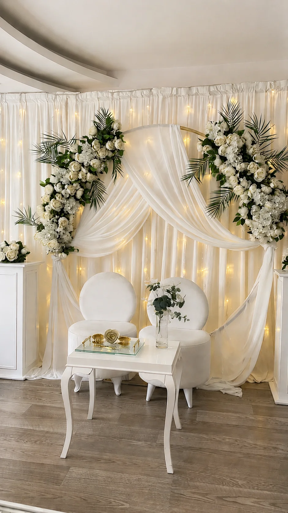
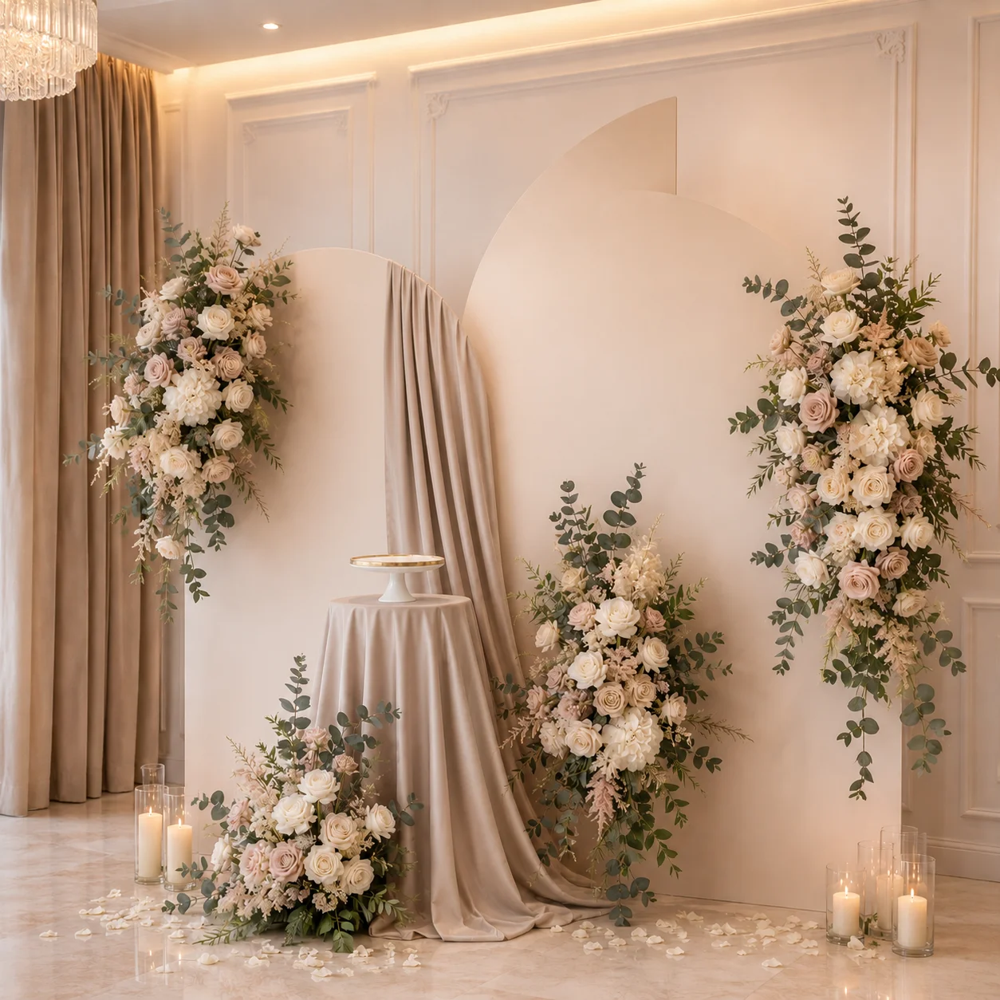
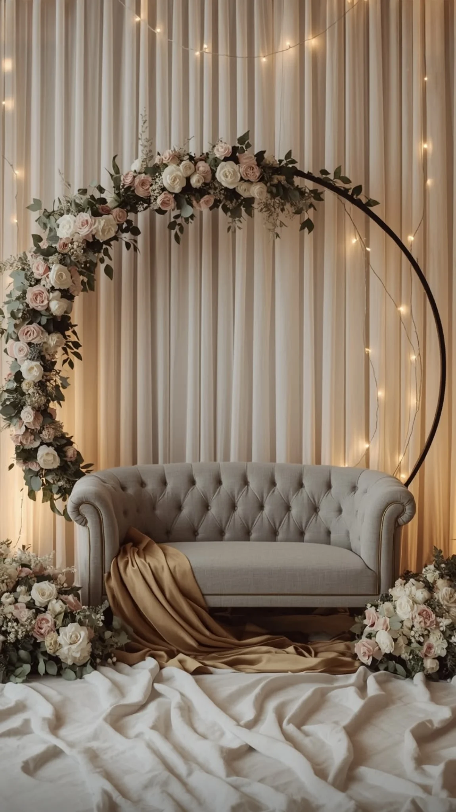
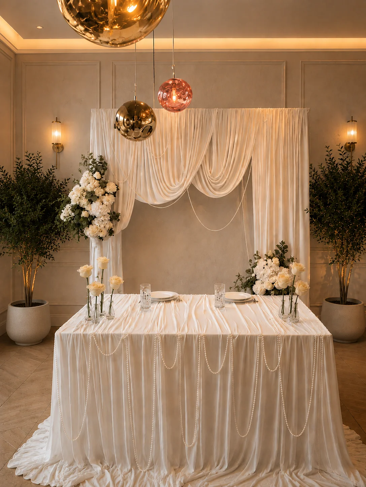

Описание проекта
Задача проекта - создать свадебную фотозону, которая не перегружает интерьер и подходит для портретов пары, семейных снимков и фото гостей. Основой стала бежево-молочная палитра с теплыми цветочными акцентами. Такая гамма хорошо работает в ресторанах Минска, где уже есть светлые стены, дерево, кремовый текстиль или латунные детали.
Мы использовали декоративные панели, цветочную композицию, мягкий объем и аккуратный свет. Фотозона была рассчитана так, чтобы в кадр помещались молодожены, родители и небольшие группы гостей. Высота и ширина конструкции подбирались под зал, а свободное расстояние перед зоной оставили для фотографа.
Цветовая гамма: молочный, бежевый, теплый белый, светлый песочный, приглушенная зелень. Место проведения: банкетная площадка в Минске. Ориентировочная стоимость: от 1 600 Br в зависимости от размера, цветов и светового оформления.
Фото проекта




